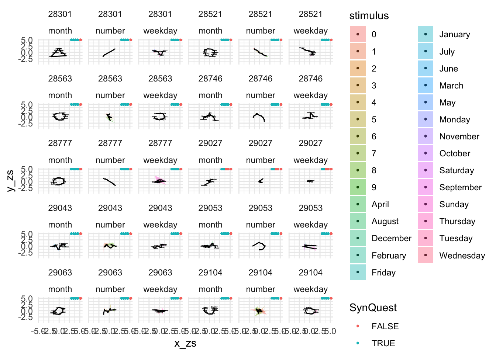
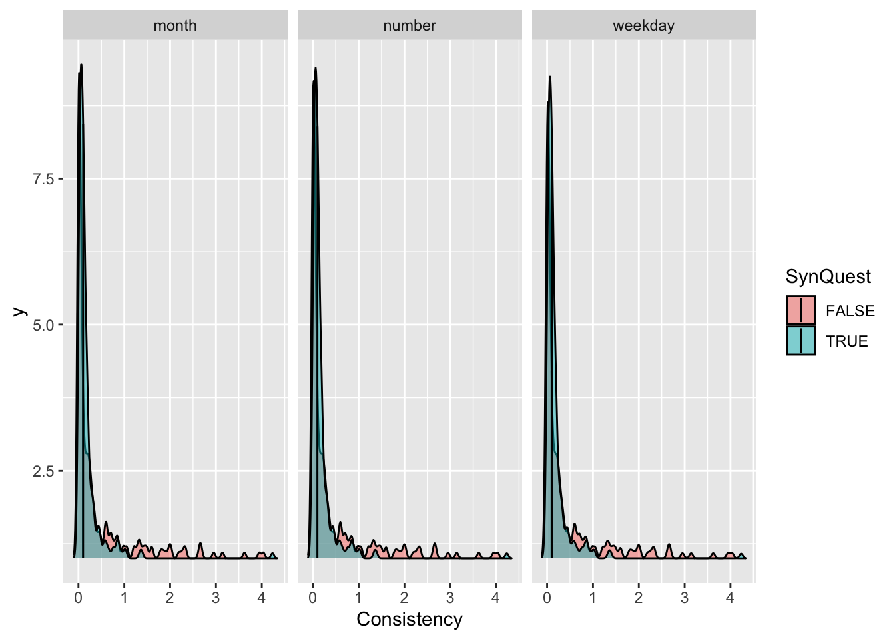
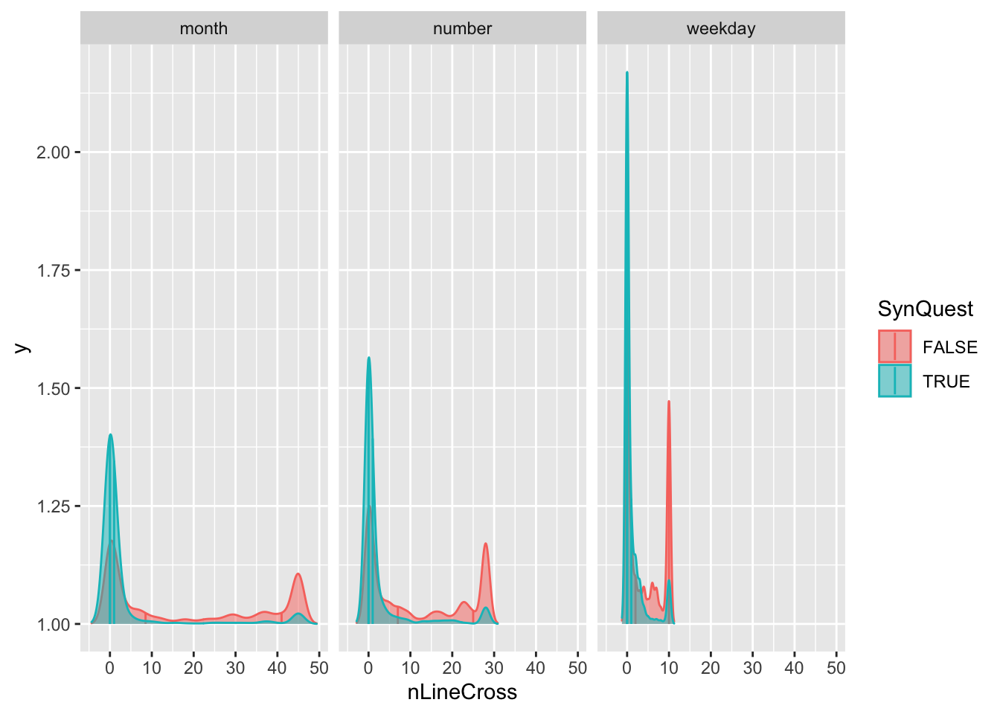

Calculating consistency Each stimulus is represented by three xy coordinates - (x1, y1), (x2, y2), (x3, y3) - from the three repetitions. For each stimulus, the area of the triangle bounded by the coordinates is calculated as follows:
The mean area is calculated by adding together the area for each stimulus and dividing by 29. This unit is transformed into a percentage area taking into account the different pixel resolution of each participant.
Mean area = $(Summed area / 29) * 100 / Screen area $ Where: \(Screen area = Xpixels * Ypixels\)
Replicate Rothen methods. Might take some time to compute.
Calculating chance levels of consistency To create permuted datasets for each participant: the 87 xy coordinates are randomly shuffled so they are no longer linked to the original data labels (“Monday”, “5”, “April”, etc.). The mean area of the triangles based on the shuffled coordinates is computed (as described above), and the whole process is repeated 1000 times to obtain a subject-specific distribution of chance levels of consistency. A z-score is calculated comparing the observed consistency against the mean and SD of the permuted data:
\(Z = [(observed consistency) – (mean consistency of permuted data)] / (SD of permuted data)\)
### Create a simulated distribution of consistency. Note that each time this is run it will give a slightly different answer due to the randomisationIDlist <-unique(ds$ID)simulated_consistency <-data.frame() observed_consistency <-data.frame() n <-100# Total iterationsbar_width <-50update_points <-round(seq(1, length(IDlist), length.out =200))for(ID_n in1:length(IDlist)) {if (ID_n %in% update_points ||length(IDlist) == n) { percent <- ID_n /length(IDlist) num_hashes <-round(percent * bar_width) bar <-paste0("[", paste(rep("#", num_hashes), collapse =""), paste(rep("-", bar_width - num_hashes), collapse =""), "]")cat(sprintf("\r%s %3d%%", bar, round(percent *100)))flush.console() }# print(ID_n) ds_ID <- ds %>%filter(ID == IDlist[ID_n]) observed_consistency[ID_n,1] <-unique(ds_ID$ID) observed_consistency[ID_n,2] <-unique(ds_ID$Consistency)### calculate the x and y standard deviations (no longer used, but calculated by Ward et al. 2018); Note the syntoolkit software calculated population SD (using N) but R will use sample SD (using N-1). The values returned are very similar. observed_consistency[ID_n,3] <-unique(sd (ds_ID$x) / ds_ID$width) observed_consistency[ID_n,4] <-unique(sd (ds_ID$y) / ds_ID$height)for (N_shuffle in1:1000) {## shuffle the data shuffled <- ds_ID[sample(nrow(ds_ID)),] shuffled$rep2 <-rep(1:29,3) area =0 Stim_list <-unique(ds_ID$stimulus) shuffled <- shuffled %>%group_by(rep2) %>%mutate(area =triangle_area(x, y)) simulated_consistency[N_shuffle,1] =unique((sum(shuffled$area)/29) *100/ (shuffled$width * shuffled$height)) }## calculate the p-value and z-score of the observed consistency observed_consistency[ID_n,5] <-mean(simulated_consistency[,1]) observed_consistency[ID_n,6] <-sd(simulated_consistency[,1]) observed_consistency[ID_n,7] <- (observed_consistency[ID_n,2] - observed_consistency[ID_n,5]) / observed_consistency[ID_n,6]}colnames(observed_consistency) <-c('participant', 'consistency', 'x-sd', 'y-sd', 'mean_simulation', 'SD_simulation', 'z-score')
3. Compute SD as in Ward
As in Ward:
“Specifically, the standard deviation of the x-coordinates and/or the standard deviation of the y-coordinates (measured across all trials) should exceed a proposed value of 0.075 for a normalized screen with width and height of 1 unit.”
“A participant who produced a horizontal straight-line form would have a very low standard deviation in the y-coordinates but a high standard deviation in x-coordinates, and a participant with a vertical line would have the reverse profile. A participant with a circular spatial form would be high on both. A participant who clicks randomly around the screen would also be high on both x and y standard deviation, but would fail the consistency tests (the triangles would be large).”
# Rescale x & y mcoordinates depending on screen size:ds$xSc <- ds$x/ds$widthds$ySc <- ds$y/ds$height# Compute the SD across all trials (per ID):ds <- ds %>%ungroup() %>%group_by(ID) %>%mutate(SD_IDx =sd(xSc)) %>%mutate(SD_IDy =sd(ySc)) ds %>%filter(ID ==28301) %>%filter(row_number()==1) %>%pull(SD_IDy)
[1] 0.2030271
ds_Q %>%filter(ID ==28301) %>%pull(y_sd)
[1] 0.2018569
# Compare full lists:sd_ds <- ds %>%group_by(ID) %>%filter(row_number()==1) %>%select(SD_IDy,ID)sd_dsQ <- ds_Q %>%group_by(ID) %>%select(y_sd,ID)merge_sd <-merge(sd_ds,sd_dsQ, by ="ID")# I think we can live with this degree of error (i.e. max 0.002)# boxplot(merge_sd$SD_IDy -merge_sd$y_sd)
5. Compute line intersections
An idea I have is to look into the lines and order of the forms. I would exclude when lines crosses. (since we expect forms the lines crossing means no form is formed). Needs refinement.
# Define function: this was generated by chatgpt. I tested it and it works, but need to figure out the geometry behind it:count_self_intersections <-function(x, y, verbose =TRUE) { n <-length(x)if (n <4) {if (verbose) cat("Need at least 4 points to check for self-intersection.\n")return(0) }# Orientation function orientation <-function(p, q, r) { val <- (q[2] - p[2]) * (r[1] - q[1]) - (q[1] - p[1]) * (r[2] - q[2])if (is.na(val)) return(NA)if (val ==0) return(0)if (val >0) return(1) elsereturn(2) }# Check if q lies on segment pr on_segment <-function(p, q, r) {if (any(is.na(c(p, q, r)))) return(FALSE) q[1] <=max(p[1], r[1]) && q[1] >=min(p[1], r[1]) && q[2] <=max(p[2], r[2]) && q[2] >=min(p[2], r[2]) }# Main intersection check segments_intersect <-function(p1, p2, p3, p4) { o1 <-orientation(p1, p2, p3) o2 <-orientation(p1, p2, p4) o3 <-orientation(p3, p4, p1) o4 <-orientation(p3, p4, p2)if (any(is.na(c(o1, o2, o3, o4)))) return(FALSE)# General caseif (o1 != o2 && o3 != o4) return(TRUE)# Special colinear casesif (o1 ==0&&on_segment(p1, p3, p2)) return(TRUE)if (o2 ==0&&on_segment(p1, p4, p2)) return(TRUE)if (o3 ==0&&on_segment(p3, p1, p4)) return(TRUE)if (o4 ==0&&on_segment(p3, p2, p4)) return(TRUE)return(FALSE) } count <-0for (i in1:(n -2)) {for (j in (i +2):(n -1)) {if (j == i +1) next# skip adjacent segments p1 <-c(x[i], y[i]) p2 <-c(x[i +1], y[i +1]) p3 <-c(x[j], y[j]) p4 <-c(x[j +1], y[j +1])if (segments_intersect(p1, p2, p3, p4)) { count <- count +1if (verbose) {cat(sprintf("Intersection #%d: segments (%d-%d) and (%d-%d)\n", count, i, i+1, j, j+1)) } } } }if (verbose) cat("Total crossings:", count, "\n")return(count)}
I think that the number of stimuli per condition should be taken into account (i.e. 9 numbers, 7 days, 12 months). Hence would need to be divided by this number of stimulus.
In each condition the connected x and y generates a segment, hence the number of segment is length(stimuli)-1. Moreover, currently, each stimuli is connected by 3 segment, one for each (of the 3) repetition. So dividing by 3, we have the average number of segment crossings per condition. Next we sum these for each ID Ideally we should compute the number of crossings across the repetitions, in addition to make it more complex it would also be computationally more demanding, and I don’t believe it would lead to a significant difference.
To do: - Maybe the easier would be to have the average number of crossing per segment.
IMPORTANT: data frame needs to be informed of stimulus order to make sense!
ds <- ds %>%group_by(ID, Cond,repetition) %>%mutate(nSegments =length(stimulus)-1)# Number of crossings per condition and repetitionds <- ds %>%group_by(stimulus) %>%arrange(stimulus) %>%arrange(ordered(stimulus, levels =c("Monday", "Tuesday", "Wednesday", "Thursday", "Friday","Saturday","Sunday"))) %>%arrange(ordered(stimulus, levels =c("January", "February", "March", "April", "May","June","July","August","September","October","November","December"))) %>%ungroup() %>%# group_by(ID, Cond,repetition) %>%group_by(ID, Cond) %>%# This should ignore the repetitions. So it should become a very long line including all repetitions, which might catch some consistency.mutate(nLineCross = (count_self_intersections(x,y, verbose =FALSE)))ds <- ds %>%group_by(ID, Cond) %>%mutate(meanLineCross = nLineCross/(3*nSegments))# Average per ID, use the number of segment rather than the number of stimulids <- ds %>%group_by(ID) %>%mutate(GA_lineInter =mean(meanLineCross))
4.1 Random walk
There are thee way of dealing with repetitions: - compute separately the line crossing across repetitions - compute the line crossing as if we had a very long line (i.e. 1_1 -> 2_1 -> 3_1 -> 4_1, … 7_3 -> 8_3 -> 9_3) (_x = repetition). - do a random walk across repetitions. (But I don’t know if it makes any sense practically).
# ds <- ds %>%# group_by(ID, Cond,repetition) %>%# mutate(nSegments = length(stimulus)-1)# # # Number of crossings per condition and repetition# ds <- ds %>% # group_by(stimulus) %>%# arrange(stimulus) %>%# arrange(ordered(stimulus, levels = c("Monday", "Tuesday", "Wednesday", "Thursday", "Friday","Saturday","Sunday"))) %>% arrange(ordered(stimulus, levels = c("January", "February", "March", "April", "May","June","July","August","September","October","November","December"))) %>%# ungroup() %>%# # group_by(ID, Cond,repetition) %>%# group_by(ID, Cond) %>% # This should ignore the repetitions. So it should become a very long line including all repetitions, which might catch some consistency.# mutate(nLineCross = (count_self_intersections(x,y, verbose = FALSE)))# # ds <- ds %>% # group_by(ID, Cond) %>%# mutate(meanLineCross = nLineCross/(3*nSegments))# # # Average per ID, use the number of segment rather than the number of stimuli# ds <- ds %>%# group_by(ID) %>%# mutate(totLineCross = mean(meanLineCross))
4.2. Line intersections
library(ggridges)ds <- ds %>%group_by(ID, Cond,repetition) %>%mutate(nSegments =length(stimulus)-1)# Number of intersections for each ID X Cond X repetitionds <- ds %>%group_by(stimulus) %>%arrange(stimulus) %>%arrange(ordered(stimulus, levels =c("Monday", "Tuesday", "Wednesday", "Thursday", "Friday","Saturday","Sunday"))) %>%arrange(ordered(stimulus, levels =c("January", "February", "March", "April", "May","June","July","August","September","October","November","December"))) %>%ungroup() %>%group_by(ID, Cond,repetition) %>%mutate(nLineCross = (count_self_intersections(x,y, verbose =FALSE)))# Linear transformation: chances for each segment to intersect:ds <- ds %>%group_by(ID, Cond,repetition) %>%mutate(mean_lineInter = nLineCross/nSegments)# Average per IDds <- ds %>%group_by(ID) %>%mutate(GA_lineInter =mean(meanLineCross))
Arbitrary threshold of 0.25.
ds$SynLine <- ds$GA_lineInter <=0.25
GA_lineInter is the general average of all repetitions and conditions, of the chances that two segments within each Condition and repetition would cross. That is, for each IDXConditionXrepetition separatedly, we computed the number of segments that crosses in ordered stimuli (note the number of segment is the number of stimuli - 1), divided by the number of segments. This gives, for each IDXConditionXrepetition separately, the chances that two segments intersect. This chance is then averaged for each ID. This also means that conditions with more stimuli might have smaller averages (?). Could also compute the median.
With this criteria alone 93.3618844 % would qualify as 3S
5.4. Permuted z-score
see ´SynPermzs´
Note this might vary due to the randomisation process involved in the permutation. Some sd are 0, leadiong to NaN in the z score. The two additional lines are to take this into account.
This plot exites me the most, indicates that those who self report synesthesia seem to have less line crossings than non synesthetes. Also indicates that most do not have line crossings.
ggplot(ds, aes(x = GA_lineInter, group = SynQuest, fill = SynQuest)) +geom_density(alpha =0.5)
This exports many pdf’s. It plots each ID and condition z-score x and y coordinates. Since each coordinate is repeated 3 times, these are represented by triangles. The line paths connect average coordinates to visualize forms (stimulus are ordered, i.e. 1 to 9, monday to sunday, january to december). Finally in the top right corner, each dots indicates if the ID would pass / fails depending on the criteria:
Questionnaire SynQuest
Consistency SynCons
SD SynSD
Permuted z-score SynPermzs
# Multiple pageslibrary(ggforce)# Set the number of rows & columns per pagesN_rows =5N_cols =9for(i in1:(round(length(IDlist)/(N_rows*N_cols)*3)+1)){ gp1 <- ds %>%# filter(ID %in% c(28779,29027,29043)) %>%group_by(stimulus) %>%arrange(stimulus) %>%arrange(ordered(stimulus, levels =c("Monday", "Tuesday", "Wednesday", "Thursday", "Friday","Saturday","Sunday"))) %>%arrange(ordered(stimulus, levels =c("January", "February", "March", "April", "May","June","July","August","September","October","November","December"))) %>%ggplot(aes(x = x_zs, y = y_zs, group = stimulus, label = stimulus, fill = stimulus)) +geom_text(aes(x =4, y =4.5, label = dataSource), size =1) +geom_text(aes(x =3.7, y =5.5, label =c("Criteria: Ques Cons SD Pzs Line")), size =2) +geom_point(aes(x =5-2, y =5, color =SynQuest), size =0.5) +geom_point(aes(x =5-1.5, y =5, color =SynCons), size =0.5) +geom_point(aes(x =5-1., y =5, color =SynSD), size =0.5) +geom_point(aes(x =5-0.5, y =5, color =SynPermzs), size =0.5) +geom_point(aes(x =5+0.2, y =5, color =SynLine), size =0.5) +# SynLine is developed later in the code.geom_polygon(alpha =0.4) +geom_text(aes(x = X_mean_zs+0.1, y = Y_mean_zs+0.1), colour ="black", size =0.5) +geom_path(aes(x = X_mean_zs, y = Y_mean_zs, group =1)) +geom_path(aes(x = x_zs, y = y_zs, group = repetition), alpha =0.2) +geom_text(aes(x = x_zs+0.1, y = y_zs+0.1), size =0.5, alpha =0.5) +facet_wrap_paginate( ~ ID+ Cond, ncol = N_cols, nrow = N_rows, page = i) +theme_minimal() gp1# ggsave(paste0("Figures/Syn_Categories",i,".pdf"),width = N_cols*2, height = N_rows*2)}
6.1. ID issues:
Maybe could automatize by pulling the inconsistent but with few line crossings.
# A tibble: 87 × 38
# Groups: ID, stimulus [29]
stimulus x y width height group ID dataSource trial_index trial_id
<chr> <dbl> <dbl> <dbl> <dbl> <chr> <chr> <chr> <dbl> <dbl>
1 January 56 38 1920 1057 Syn 45776 Ward 76 1426066
2 January 60 32 1920 1057 Syn 45776 Ward 48 1426038
3 January 195 212 1920 1057 Syn 45776 Ward 20 1425987
4 February 353 110 1920 1057 Syn 45776 Ward 4 1425960
5 February 783 73 1920 1057 Syn 45776 Ward 43 1426032
6 February 957 78 1920 1057 Syn 45776 Ward 71 1426061
7 March 696 124 1920 1057 Syn 45776 Ward 5 1425961
8 March 1710 50 1920 1057 Syn 45776 Ward 69 1426059
9 March 1725 91 1920 1057 Syn 45776 Ward 30 1426006
10 April 151 292 1920 1057 Syn 45776 Ward 34 1426014
# ℹ 77 more rows
# ℹ 28 more variables: session_id <dbl>, rt <dbl>, Cond <chr>, Nrep <int>,
# repetition <int>, X_mean <dbl>, Y_mean <dbl>, x_zs <dbl[,1]>,
# y_zs <dbl[,1]>, X_mean_zs <dbl>, Y_mean_zs <dbl>, triangle_area <dbl>,
# Screen_area <dbl>, Consistency <dbl>, xSc <dbl>, ySc <dbl>, SD_IDx <dbl>,
# SD_IDy <dbl>, nSegments <dbl>, nLineCross <dbl>, meanLineCross <dbl>,
# GA_lineInter <dbl>, mean_lineInter <dbl>, SynLine <lgl>, SynQuest <lgl>, …
6.1.1 Not pass SD ID’s that pass line criteria:
NoSDbutLine_ID <-unique(ds$ID[!ds$SynSD & ds$SynLine])# Only 1 ID!NopermbutLine_ID <-unique(ds$ID[!ds$SynPermzs & ds$SynLine])# No one!NoLinebutCons <-unique(ds$ID[!ds$SynLine & ds$SynCons])
ds %>%filter(ID %in% NoLinebutCons[1:10]) %>%group_by(stimulus) %>%arrange(stimulus) %>%arrange(ordered(stimulus, levels =c("Monday", "Tuesday", "Wednesday", "Thursday", "Friday","Saturday","Sunday"))) %>%arrange(ordered(stimulus, levels =c("January", "February", "March", "April", "May","June","July","August","September","October","November","December"))) %>%ggplot(aes(x = x_zs, y = y_zs, group = stimulus, label = stimulus, fill = stimulus)) +geom_point(aes(x =5-2, y =5, color =SynQuest), size =0.5) +geom_point(aes(x =5-1.5, y =5, color =SynCons), size =0.5) +geom_point(aes(x =5-1., y =5, color =SynSD), size =0.5) +geom_point(aes(x =5-0.5, y =5, color =SynPermzs), size =0.5) +geom_point(aes(x =5+0.2, y =5, color =SynLine), size =0.5) +# SynLine is developed later in the code.geom_polygon(alpha =0.4) +geom_text(aes(x = X_mean_zs+0.1, y = Y_mean_zs+0.1), colour ="black", size =0.5) +geom_path(aes(x = X_mean_zs, y = Y_mean_zs, group =1)) +facet_wrap(ID ~ Cond) +theme_minimal()

7. Fig Distributions
library(ggridges)ds %>%filter(dataSource =="Ward") %>%ggplot(aes(x = Consistency, y =1, group = SynQuest, fill = SynQuest)) +stat_density_ridges(quantile_lines =TRUE,quantiles =0.5,alpha =0.5) +facet_grid(~Cond)
Picking joint bandwidth of 0.0331
Picking joint bandwidth of 0.0343
Picking joint bandwidth of 0.0369

ds <- ds %>%group_by(ID, Cond,repetition) %>%mutate(nSegments =length(stimulus)-1)# Number of crossings per condition and repetitionds <- ds %>%group_by(stimulus) %>%arrange(stimulus) %>%arrange(ordered(stimulus, levels =c("Monday", "Tuesday", "Wednesday", "Thursday", "Friday","Saturday","Sunday"))) %>%arrange(ordered(stimulus, levels =c("January", "February", "March", "April", "May","June","July","August","September","October","November","December"))) %>%ungroup() %>%group_by(ID, Cond,repetition) %>%# group_by(ID, Cond) %>% # This should ignore the repetitions. So it should become a very long line including all repetitions, which might catch some consistency.mutate(nLineCross = (count_self_intersections(x,y, verbose =FALSE)))ds <- ds %>%group_by(ID, Cond) %>%mutate(meanLineCross = nLineCross/(3*nSegments))# Average per ID, use the number of segment rather than the number of stimulids <- ds %>%group_by(ID) %>%mutate(GA_lineInter =mean(meanLineCross))ds %>%filter(dataSource =="Ward") %>%ggplot(aes(x = GA_lineInter, y =1, group = SynQuest, fill = SynQuest)) +stat_density_ridges(quantile_lines =TRUE,quantiles =0.5,alpha =0.5) +facet_grid(~Cond) +xlim(0,1)
Picking joint bandwidth of 0.0304
Picking joint bandwidth of 0.0315
Picking joint bandwidth of 0.0338
Warning: Removed 3567 rows containing non-finite outside the scale range
(`stat_density_ridges()`).
Laboratory or Sandkiste
ds <- ds %>%group_by(ID, Cond,repetition) %>%mutate(nSegments =length(stimulus)-1)# Number of intersections for each ID X Cond X repetitionds <- ds %>%group_by(stimulus) %>%arrange(stimulus) %>%arrange(ordered(stimulus, levels =c("Monday", "Tuesday", "Wednesday", "Thursday", "Friday","Saturday","Sunday"))) %>%arrange(ordered(stimulus, levels =c("January", "February", "March", "April", "May","June","July","August","September","October","November","December"))) %>%ungroup() %>%group_by(ID, Cond,repetition) %>%mutate(nLineCross = (count_self_intersections(x,y, verbose =FALSE)))ds %>%filter(dataSource =="Ward") %>%ggplot(aes(x = nLineCross, y =1, group = SynQuest, fill = SynQuest,colour = SynQuest)) +stat_density_ridges(quantile_lines =TRUE,quantiles =c(0.25,0.5,0.75),alpha =0.5) +facet_grid(~Cond)
Picking joint bandwidth of 1.46
Picking joint bandwidth of 0.954
Picking joint bandwidth of 0.412

# Linear transformation: chances for each segment to intersect:ds <- ds %>%group_by(ID, Cond,repetition) %>%mutate(mean_lineInter = nLineCross/nSegments)# Average per IDds <- ds %>%group_by(ID) %>%mutate(GA_lineInter =mean(meanLineCross))## Plotds %>%filter(dataSource =="Ward") %>%ggplot(aes(x = mean_lineInter, y =1, group = SynQuest, fill = SynQuest,colour = SynQuest)) +stat_density_ridges(quantile_lines =TRUE,quantiles =c(0.25,0.5,0.75),alpha =0.5) +facet_grid(~Cond)
Picking joint bandwidth of 0.133
Picking joint bandwidth of 0.106
Picking joint bandwidth of 0.0686
ds %>%filter(dataSource =="Ward") %>%ggplot(aes(x = GA_lineInter, y =1, group = SynQuest, fill = SynQuest,colour = SynQuest)) +stat_density_ridges(quantile_lines =TRUE,quantiles =c(0.25,0.5,0.75),alpha =0.5)
Picking joint bandwidth of 0.0285
ds$SynLine <- ds$GA_lineInter <=0.25
7. Cohen’s k,consistency, Specificity and Accuracy
# Install if neededlibrary(irr)
Loading required package: lpSolve
Diagnoses <- ds %>%group_by(ID) %>%filter(row_number() ==1) %>%select(ID, SynQuest, SynCons, SynPermzs, SynLine,dataSource)# Line categorizes significantly differently from Consistency:kappa2(Diagnoses[,c(3,5)])
# Overall does not change (but doubt about this):# Note: Missing data are omitted in a listwise way.# THM: significant difference might depend on calculation used:kappam.light(Diagnoses[,2:5])
Light's Kappa for m Raters
Subjects = 467
Raters = 4
Kappa = 0.244
z = 1.06
p-value = 0.288
kappam.fleiss(Diagnoses[,2:5])
Fleiss' Kappa for m Raters
Subjects = 467
Raters = 4
Kappa = 0.233
z = 12.3
p-value = 0
kappam.fleiss(Diagnoses[,2:5], exact=TRUE)
Fleiss' Kappa for m Raters (exact value)
Subjects = 467
Raters = 4
Kappa = 0.245
7.1. Consistency
criterion1 =as.logical(Diagnoses_Ward$SynQuest)criterion2 =as.logical(Diagnoses_Ward$SynCons)# Accuracyaccuracy <-sum(criterion1 == criterion2) /length(criterion1)# Sensitivity: how well criterion1 detects positive cases in criterion2true_positives <-sum(criterion1 & criterion2)actual_positives <-sum(criterion2)sensitivity <- true_positives / actual_positives# Consistency: Percent agreement (could also compute Cohen’s kappa)percent_agreement <-mean(criterion1 == criterion2)# Outputcat(sprintf("Accuracy: %.2f\n", accuracy))